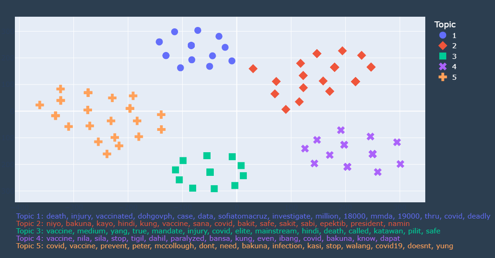

The data modeling process involved topic clustering using LDA (Latent Dirichlet Allocation) and T-SNE (t-Distributed Stochastic Neighbor Embedding) techniques. The resulting clusters revealed distinct topics, including concerns about vaccine safety and efficacy, doubts about the motives behind vaccine mandates, reports of adverse effects, and alternative prevention strategies.
Topic 1
“COVID-19 vaccines are deadly, there are cases that these have caused death and injury even to the vaccinated.”
Topic 2
“If the vaccines are truly safe and effective, then why did the president had the COVID-19?”
Topic 3
“The vaccine mandate is only pushed by the elites and the mainstream media continues to cover up the truth. These are NOT safe. They cause death and injury.”
Topic 4
“Stop the vaccines! There have been cases when the vaccinated got paralyzed.”
Topic 5
“We don’t need COVID-19 vaccines, we only need to listen to Peter McCollough (an American cardiologist) to prevent COVID and top stop infection.”